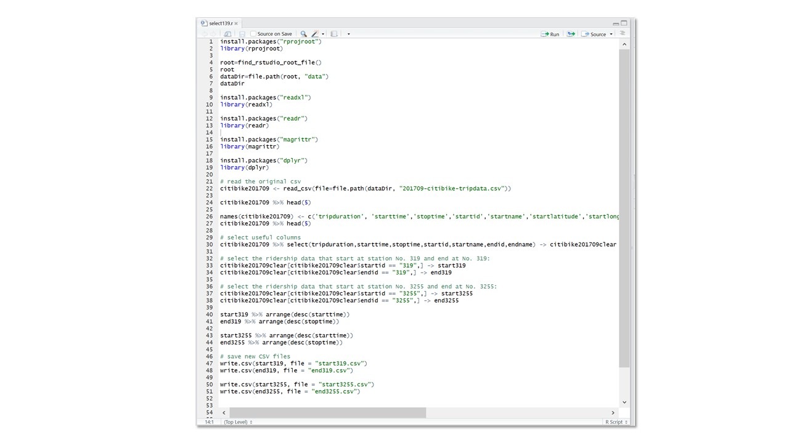
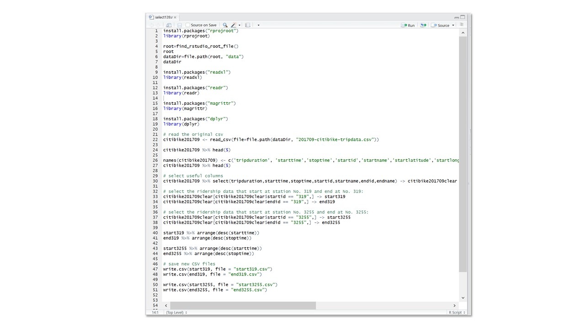
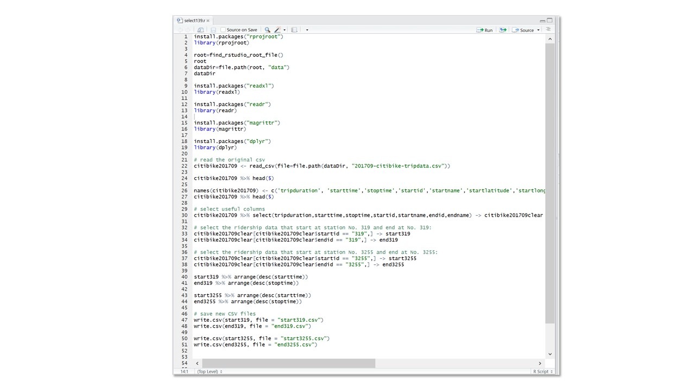

BACKGROUND
- The expansion of Citibike stations
- The challenge of rebalancing Citibikes
- High demand in rush hour and summer
- Past research: relationship between Citibike ridership and neighborhood demographics based on cencus tracts
PRELIMINARY IDEAS
- Visualize the ridership change in a day.
- Where do bikes come and go? Which is the popular station?
- What is the supply and demand of each CitiBike station?
DATA EXPLORATION
I used the CitiBike trip history data in September, 2017. There are Over 30,000 rows of data for one days. To further explore the data and find more interesting point, I made several sketches by using the one-day data of one station. However, there are already many project and research that focus on the CitiBike ridership visualization, whether by tracing and mapping the routes of all the rides, or by analyzing the ridership characteristics in different time and weather conditions.

VISUALIZATION DESIGN
Here, I want to find some visualization other than maps to display both supply and demand at the CitiBike stations. I abandon part of the first idea as the time change is already generally accepted by people, and keep the idea of demand and supply ratio.
Finally, I decided to use the design idea of Sankey chart. The logic of Sankey chart is to show a flowchart for the upstream and downstream connections between different elements. There are no repeated elements on both sides. I wanted to draw different lines that start from the different station and end at selected station A to show the bikes that comes to station A. Then, draw another set of shapes from station A and end at different end stations to show the bikes that leave from station A. The width of the shape represents the number of rides (the visualization ignores the rides less than one trip). Meanwhile, the blue rectangle in the center represent the total docks at this station.
Sketches:


PROCESS
As the dataset for CitiBike is too large, I decided to select several stations and use their one-day ridership data. One station is Columbus Ave. 72th St., located near Central Park in a residential neighborhood in Uptown. It also has the largest number of total docks at the station. Second station is 8th Ave. 31st St. in Midtown, which is a popular site for tourists. Third station is Fulton St. Broadway in Downtown. I try to use these three stations as representatives of typical locations in NYC. The output can show the ridership patterns in residential area, tourism area, and office area.
Project Development Process:

FINDINGS
FUTURE DIRECTION
- Do more stations.
- Add curves to each line.
- Use map as a supplimentary visualization for the findings?